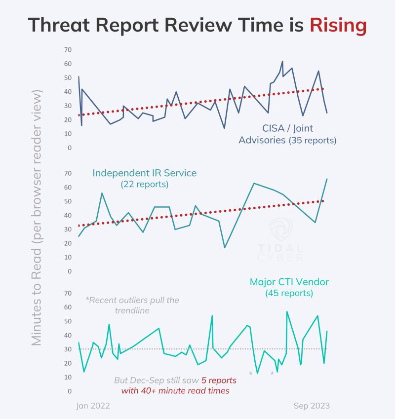
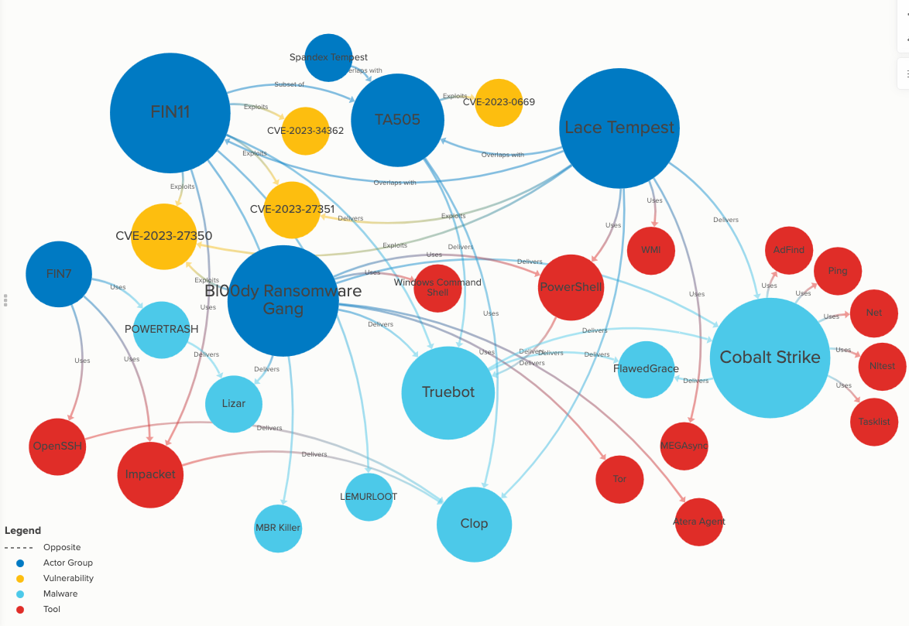
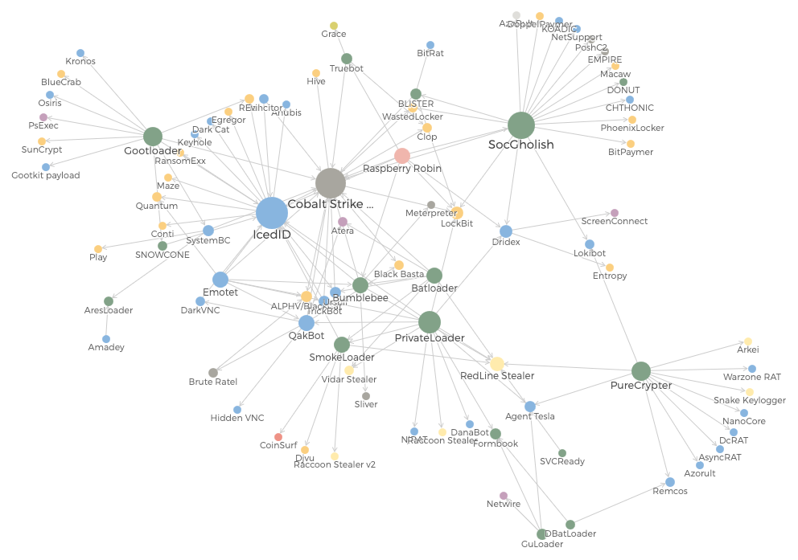
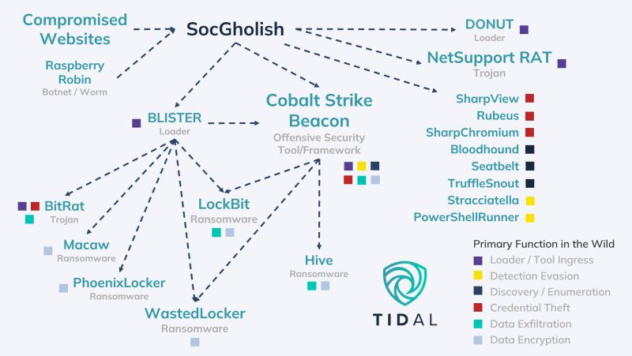
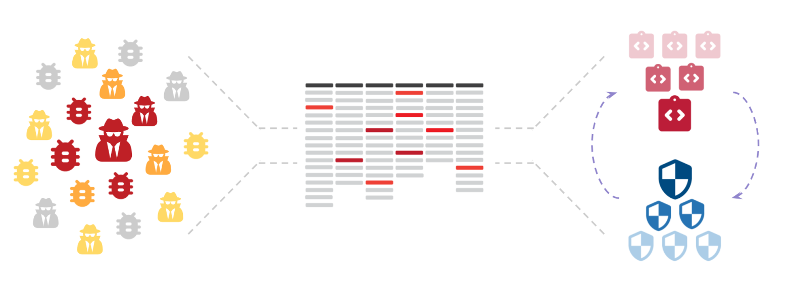
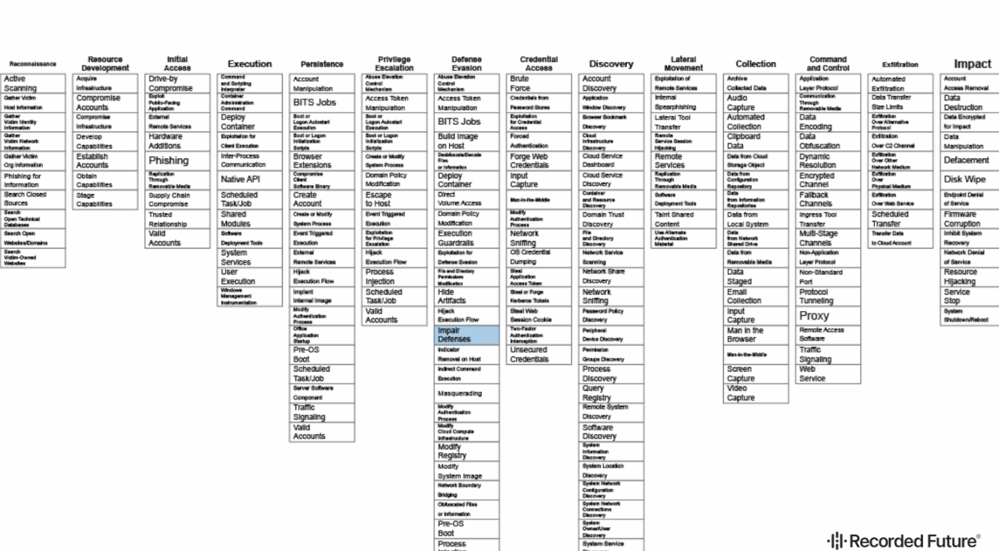

An interactive visualization of 8k OSINT tools & resources, scaled according to relative citation popularity
Visualizations
Below are some of my favorite visualizations I've had a chance to share. Most images link to a supporting source that provides further context.

Many CTI reports contain increasing amounts of detail, but this often adds time & effort to the review & processing phases
Top ransomware operations often attack indiscriminately, making prioritization a challenge

An auto-generated series of Diamond Model-esque visuals summarizing key characteristics of major cyber adversary groups & their common targets

An interactive link analysis of the tools & TTPs associated with the Clop ransomware operation

An interactive visualization showing relationships among various malware/tools used for initial network access (see the accompanying talk here!)

SocGholish malware's links to adversary operations & other attacker tools

Informing red team testing with risk profiling, MITRE ATT&CK®, and TTP intelligence leads to quicker identification & closing of security gaps

Security control alignment with TTPs and the key steps of a control validation process
Publications
The Ultimate Guide to Cyber Threat Profiling: Authored all of the content in this 60-page guide designed for threat intelligence analysts and other security practitioners
Tidal Cyber's blog: Lead contributor to the company's blog, regularly publishing CTI- and data-focused analysis
2023 OSINT Landscape Trends: A Data-Driven Analysis: An analytical summary after tracking tens of thousands of OSINT-related tools & resources over five years
Citations & Appearances
Axios: Hackers expected to double down on trusted tactics in 2024
DarkReading: Deepfake Democracy: AI Technology Complicates Election Security, Iran-Israel Cyber War Goes Global, Redesigning the Network to Fend Off Living-Off-the-Land Tactics
BankInfoSecurity: Sizing Up the Worst Healthcare Hacks of 2023, As Elections Loom, So Do Adversaries' Influence Operations, Hackers Hit Medical Imaging Services Centers in NY, Texas
Help Net Security: Cyber threats cast shadow over 2024 elections
NextGov: AI escalates election cyber threats with the US as prime target, reports find
Help Net Security: Cyber threats cast shadow over 2024 elections
Infosecurity Magazine: US, UK and India Among the Countries Most At Risk of Election Cyber Interference
Activity-Attack Graphs for Intelligence-Informed Threat COA Development: Data from my Categorized Adversary TTPs project was cited & used in a study conducted by researchers at the U.S. Military Academy at West Point
MetaOSINT project mentioned in the following publications: The OSINT Newsletter Issue #35 & Issue #38, Week in OSINT, OSINT Jobs Weekly OSINT Newsletter
Podcasts:
- The Indicator from Planet Money (NPR)
- Caveat (CyberWire)
- Future of Cyber Crime Podcast (KELA)
- Off the Record (Recorded Future)
- Blue Team Warrior Podcast (Semper Sec)
Invited to present & train at numerous conferences & events (see more on the Talks page)